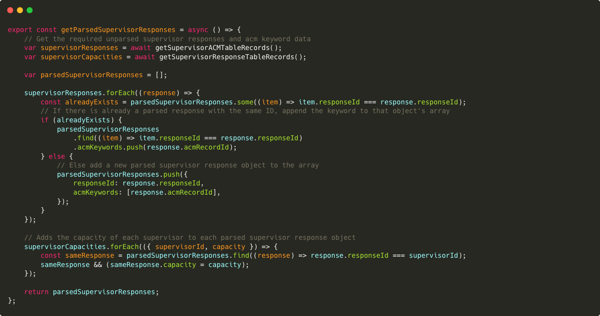
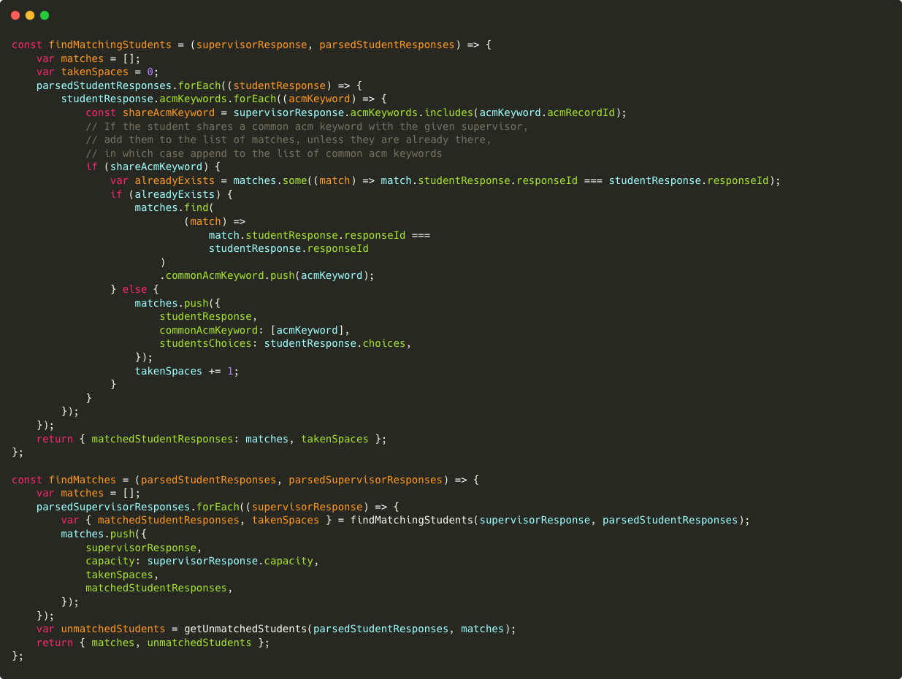
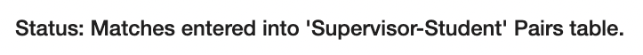

Requirements
-
Must-have
- The system should be able to allocate Students to Professors based on common interests and expertise
- The system should be able to allocate Students to industry projects based on common interests and expertise
- Students and Professors should be able to fill in forms to provide all relevant information.
- Existing data concerning users may be imported from external sources if necessary.
- Users may be pre-allocated under special arrangements, so as to remove them from the pool of entities to be allocated.
- Administrators are able to approve/reject matches, whether they are made through automatic allocation or through pre-allocation.
- Any matches that have not been approved by the administrators within a certain deadline are automatically approved.
- Data pertaining to Students, Professors, or projects should be adequately and consistently stored as to make it accessible to all those who have the need and permissions to use it.
-
Should-have
- Users may modify information about themselves that they previously filled out, by resubmitting a form or modifying previous answers.
- A user whose data is imported or inferred should be asked to check, amend, and confirm that this data is correct.
- Data from forms that users have previously submitted is preserved such that it does not need to be resubmitted for every recurring event. For example, an Academic who tends to supervise a similar project each year should be able to easily resubmit their form submission from the previous year.
-
Could-have
- Information concerning academics may be imported from modules they teach, research papers they have published, or previous acheivements/credentials.
- Information concerning students may be imported from modules they have completed (and performed well in), and any known previous acheivements.
-
Won't have
- This project will not concern the logistics of post-allocation, such as contract generation, or communication between students and supervisors; this project concerns
Implementation
Flows are pieces of logic which allow some level of automation to otherwise static objects, such as tables. Flows can be triggered by several things, like the manual press of a button, the modification of a particular table, or the arrival of a certain time of day. They can be used to do things like edit data in a table or send an email. Below are some of the most important ways in which we used flows:
-
Add Contact Field to Supervisor ACM
This flow is triggered by the addition/modification/deletion of a record inside Supervisor Responses v2. When a Supervisor Application is submitted/modified/deleted, a record is created inside Supervisor-ACM and the ID, ACM Keyword, and Supervisor Response ID fields are populated in that record. This flow is used to populate the remaining Contact field of this new record. The flow does this by extracting the Contact field from the newly modified Supervisor Response record and inserting it into the Supervisor-ACM records belonging to that supervisor.
-
Create Student-ACM Record
This flow is triggered by the addition/modification/deletion of a record inside Student Responses. When a Student Application is submitted/modified/deleted, a record is created inside Student Responses. We also want to create records inside Student-ACM, populating the columns ACM Keyword and Contact. The First-choice Interest field is extracted from the submitted record, and this is mapped to ACM Keywords using the Topic-ACM Maps. A record is created for the student associating them with each of these ACM keywords.
-
Insert Topic-ACM Records
This flow is triggered manually, and was created for the purpose of efficiently populating the lookup table which maps student topics to ACM keywords. It works by extracting all ACM keywords pertaining to a certain section and creating a row in the lookup table mapping the keyword to a particular student topic. For example, it may select all ACM keywords beginning with '2.1', and create a record mapping them to 'Algorithms and CS Core Theory'.
-
Assign Web Role to Contact
This flow is triggered when a user signs in on the Portal for the first time and selects a role. The flow is expecting a request with a JSON payload of a specific shape. This payload contains the id of the currently signed-in user, along with the id of the web role that they just selected. The flow then relates the record of the currently signed-in user in the Contact table with the record of the selected web role in the Web Roles Table. Doing this gives the permissions of that web role to the user.
-
Update Student Responses Availability
This is the longest and most complex flow in the solution and is triggered by the addition/modification of record inside the Supervisor-Student Pairs table. When a pair record is added or editted in this table, there are two things that may happen depending on the value of the 'Approved' field in the record in focus.
If this has a value of 'Rejected,' meaning the supervisor didn't approve the match, the student response of that match has it's 'Availability' field set to 'Yes.' Then, if the matches supervisor has a remaining capacity less than the actual capacity, the supervior's 'Availability' is set to 'Yes' as well.
If instead the value is 'Approved,' if the matches supervisor's remaining capacity is equal to 0, meaning they cannot facilitate any more students, the supervior's 'Availability' is set to 'No,' while the student's is 'Yes.' The pair's 'Approved' field is also set to 'Rejected.' If instead the supervisors remaining capacity is not equal to 0, it is decreased by 1, and the student's 'Availability' is set to 'No.'
- Post Match Data to Supervisor-Student Pairs Table
- HTTP Get Flows
- Get ACM Data
- Get ACM Map Data
- Get Student Response Data
- Get Supervisor Response Data
- Get Supervisor-ACM Table Data
Forms belong to tables. To create a form with X number of fields, you must first create a table with the same matching X number of columns. The data collected by filling out this form is stored in this table in the respective columns. There are 2 main Insert forms used by the portal:
-
Supervisor Application
This can be found in PowerApps inside Supervisor Responses v2 (table) > Supervisor Responses v2 main form. It should be accessed this way to customize the fields that appear on the form (and each individual tab). It can be further customized through Portal Management > Advanced Forms > Supervisor Application. Here, it is possible to reorder the steps of the form and manage form Sessions. To configure subgrids on this form, you should go to Portal Management > Basic Forms > Supervisor Application v2 > Related > Advanced Form Metadata. It may be confusing that there is both a Basic Form and an Advanced Form for the supervisor application, however they are both linked to the Supervisor Responses v2 main form (under the Supervisor Responses v2 table), so they work in harmony. -
Student Application
This can be found in PowerApps inside Student Responses > Student Responses main form. It should be accessed this way to customize the fields that appear on the form (and each individual tab). It can be further customized through Portal Management > Advanced Forms > Student Application. Here, it is possible to reorder the steps of the form and manage form Sessions.
If you want to manually add a record to a table, you go to the Table Name > Data > Add record. This opens a new tab and shows the default Information (main) form, which is simplistic by default and may only show 2 fields. To alter this and allow more fields to be populated this way, edit the Information form (of type Main, as opposed to Card or QuickViewForm). If you have multiple main forms, the pop-up tab may open in either of the main forms. You can select which main form you want to fill out using the drop down menu on the form tab. Advanced forms can support multiple steps, branching (I.e. conditional steps), and subgrids, all of which cannot be achieved with basic forms. Here is more information on basic forms and advanced forms.
Liquid is a template language, written amongst HTML that uses a combination of objects, tags, and filters inside template files to display dynamic content. Liquid, like any template language, creates a bridge between an HTML file and a data store — in our context, the data we use for matching.
Liquid can be learnt fairly quickly using the official documentation. Here are some examples where we used Liquid in our project:
-
Hiding Sensitive Data During Development
- At times during our development, we needed to display data that should be available to authenticated users only. To do this, we used Liquid control flow tags to show or hide data based on this condition:
- {% if user %}
- {% include 'my_page' %}
- {% endif %}
- If the user is not signed in, 'user' will not exist, meaning the variable holds a value of 'Nil'. This means the 'user' variable is 'falsy', causing the condition to be evaluated as false and therefore not display my_page.
- It should be noted that this is not the most sound and elegant solution to hide content from the unauthorised. PowerApps offers mechanisms to acheive this through Web Roles.
- It's often useful to have a webpage display different content depending on who the user is, and what information we have about them. Objects may have certain attributes which can be used to acheive this. As a simple example, we used:
- {{ user.fullname }}
- to display a header which display the correct name for the user that's currently logged in.
- Under different conditions, different content may need to be included in the header. We used Liquid to display all headings which should be displayed within a given Web Link Set. Here is a heavily simplified method with which we did this:
- {% for link in primary_nav.sublinks %}
- {% unless forloop.first %}
- <div style="vertical-divider"></div>
- {% endunless %}
- {{ link.name }}
- {% endfor %}
Displaying User-Specific Information
Iteration to Display Elements in an Array
We had initially decided to use Project Operations for the supervised matching section of our solution. However, after closer inspection of how the matching works in Project Operations, we decided that we wouldn’t have enough control over how students were matched to supervisors. Instead, we created a custom algorithm using Javascript.
Our matching process can be split into 5 main, distinct components.
-
Collection of Data
Since our code is written in pure JavaScript, the required data is pulled from our solution’s database using simple http GET requests. There are 5 different requests, that pull 5 separate sets of data. This data is initially collected using PowerAutomate instant cloud flows (As seen above). The flow can be broken down into three steps.
-

As you can see by this image, the flow is waiting for a GET request to its specified API. Upon receiving this request. Since the request doesnt need to send any data initially, the payload format is left empyty.
-

Next, the flow performs a ‘list rows’ operation on the specified table to get all of the lists into a JSON (JavaScript Object Notation) format. Only the rows containing data necessary for matching are included to reduce the size of the payload sent back to our code. In this case, the rows: 'acmclassificationcodesid', 'keyword', and 'id' are pulled from the 'ACM Classification Codes' table.
-
Finally, an http request of code 200 is sent back, including the JSON formatted list of data. This procedure is repeated 5 times, once for each different table that we require data from.
-
-
Cleaning the Received Data
When the data for each table is received by the code, it needs to be cleaned and put into a named JavaScript object, so that it can be easily accessed by the algorithm. Here is an example of the aforementioned get requests. The data is initially fetched from the API of the flow pulling data from the desired table. The data is then parsed into a new JavaScript object, with more human-readble attribute names. Data is also 'cleaned' where it needs to be. For example, in this function, we remove any records that do not have a specified 'responseId.'
-
Parsing of the Data
The received student data and supervisor data is then parsed into a more usable format. This is done for multiple reasons. Firstly, when a student fills out a response form, they choose which rough topics they have interests in. Each one of these topics relate to hundreds of ACM keywords. Therefore the ACM keywords need to be collated into one student response object. Secondly, when a supervisor fills out a response form, a news Supervisor-ACM table record is generated for each ACM keyword they selected as relevant to them. To make matching more simple, these too are collated so that there is only one supervisor response object per unique supervisor, having many ACM keywords related to it.
The below example shows the supervisor response parsing function. It can be seen that when sorting through Supervisor-ACM table records, responses that have a responseId that has already been used, have their ACM keywords appended to the already exisiting object, rather than creating a new one.
 - Finding All Possible Matches
The next process is to find all possible students matched to each supervisor. These matches are found based on whether the supervisor and student share an common ACM keyword in their responses. If a student is found to match to a supervisor, the student's response object is inserted into an array of 'matched students' for the supervisor. This also contains the ACM keyword that they matched on, and the priority that the student assigned to it. This process is repeated for all students for all supervisors.
Below is the actual code for finding matches. It simply loops through each parsed supervisor response object (formed in the previous step) and calls the findMatchingStudents function. The findMatchingStudents function then loops through each parsed student response object and sees if the response contains an ACM keyword that is also present in the current supervisor resposne object. If so, the student object is added to the supervisors list of matched students, as described above. The list of matches to that sueprvisor is returned. This is repeated for every supervisor.
 -
Ordering
Then, for each supervisor, the matches are ordered based on the priority that the student assigned to the ACM keyword that they matched with the supervisor on.

-
Reviewing the Matches
The final stage of the code for the matching process, is the matches review. For each supervisor, the matches that were found are reviewed one by one. Using the total number of unique student responses and supervisor responses, a minimum number of matches per supervsior is calculated. Each professor then has that many of their students matches 'finalised' and inserted into a final matches array. This is why the student matches list was orderd for each professor in the previous step.
This section of code also creates a list of any supervisors that were left with no students matched to them at the end of this process. This should only ever happend because there were more supervisors than students, not because there were no students interesting in doing what the supervisor was willing to supervise - although that is still theoretically possible.

In a similar way, this piece of code finds any students that could't be matched to any of the supervisors. Again, in practice this will probably never happen since the topics that student choose as interests in their response encompass a vast amount of ACM keywords. However, since it is still techinally possible, it is handled, since it would be usefull to the administrator.

-
Sending the Matches Back to Our Solution
After all of the matches between students and superviors have been reviewed, and matchless supervisors and students have been found, the data is properly formatted and sent back to our solution's database using an http POST request.

There is another flow in our solution waiting for a POST request to a specific API, expecting a payload containing a specifically shapped JSON.

The flow then iterates through the payload to extract all 'pairs' between a supervisor and student. From each pair, it takes the studentResponseId and supervisorResponseId associated with the pair. It uses these ID's to get the contacts of the people that submitted the responses.
The rest of the data in the pair is then extracted and a new 'Supervisor-Student Pairs' table record is generated.

The above mentioned 'Matching Algorithm' is the backend logic for what happens during the matching process, but how is it actually triggered?
The administrator has sole access to a page on our portal wesbite from where the supervised matching process can be initiated. The administrator is presented with instructions on how to use the page, is given a button to click, and a label displays the current status of the algorithm. This is shown below.

After the administrator clicks the button and the above described matching algorithm has taken place, the status label is updated, as seen below.
As described in the above section, the results from the matching algorithm are inputted into the 'Supervisor-Student Pairs' table, which is viewable by the administrator. Here the matches can be reviewed and then approved or rejected. When a pair record is editted as shown below, a PowerAutomate instant flow is run, which performs the following logic.
If a pair is rejected by an administrator, the involved student's availability is set to 'Yes' and if the supervisor's remaining capacity is less than their total capacity, the supervisor's availability is also set to 'Yes.'
If a pair is instead accpeted by an administrator, if the supervior's remaining capacity is equal to 0, the student's availability is set to 'Yes,' the supervisor's availability is set to 'No' and the pairs status is set to 'Rejected.' Otheriwise, the students availability is set to 'No' and the supervisor's remaining capacity is reduced by 1.
The administrator should review matches and rerun the algorithm until they are completely satisfied with the outcome.
-
Contact Table
Stores information about persons with whom a business unit has a relationship, such as customer, supplier, and colleague. Keeps track of who is signed into a portal. More Information.
-
ACM Classification Codes
Stores each ACM Classification Code and corresponding Keyword. The display names should be followed instead of the names (in form team42_*) of the columns. -
FYP Options
Temporary table storing supervisor responses in an unordered way. This data will be mapped into the Supervisor Responses table. -
Research Groups
Single-column table storing all research groups the supervisors are part of. This table is up to date as of 03/2022 and should be manually kept up to date with new (relevant) research groups if they appear. -
Student-ACM
Holds records linking Contacts (students) to the ACM Keywords they selected along with the priority of each keyword – not all keywords are equally important to the contact. 1 = highest priority. 3 = lowest priority. This table is automatically populated using a flow, Create Student-ACM Record. -
Student Responses
The foundation of the Student Application form – automatically records all form responses. Has a column for each of the form’s questions. -
Student Topic Options
Single-column table storing the generic topics that students can indicate an interest in on their Student Application. This table is up to date as of 03/2022 and should be manually kept up to date. -
Supervisor-ACM
Holds records linking Supervisor Responses to the relevant Contact (supervisor) to the ACM Keywords they selected. The Supervisor Response ID and ACM Keywords fields are automatically populated using a subgrid. The Contact field is also automatically populated using a flow, Add Contact field to Supervisor-ACM. -
Supervisor Responses v2
The foundation of the Student Application form – automatically records all form responses. Has a column for each of the form’s questions except for ACM Keywords and Research Groups. These fields are handled using subgrids and a one-to-many and a many-to-many relationships respectively. -
Topic-ACM Map
Students can only pick generic topics from the Student Topic Options table – they cannot pick ACM keywords. The topics are mapped into ACM keywords (and then inserted into the Student-ACM table) using the mapping stored in this table.
Information about data security and table permissions may be found here. It is important to note that without creating a Table Permission (inside Portal Management), it is not possible to display data from a table onto a webpage: the webpage will show "You don't have the appropriate permissions". The table permission should also have the correct web roles added to it so the appropriate user types are able to interact with the table.
Below is a diagram showing the relationship of all tables listed in the Table Descriptions section: